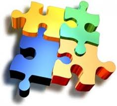

FASE 3: INTERACCION.
INTERACCIÓN.
Los recursos y actividades deben ser utilizados para socializar y compartir, para generar interacción, para estimular, y muy especialmente para guiar y acompañar
ESTRUCTURA IDEAL DE UNA EVA
Un aula virtual bien distribuida debe proporcionar, a detalle, varias y diferentes secciones dentro o fuera del EVA, para que se puedan generar procesos de interacción correctos y se motive a la vivencia de experiencias que generarán conocimiento y facilitarán los procesos tutoriales.
EL BLOQUE PACIE o BLOQUE 0
Es el más importante dentro de este proceso metodológico, se ha convertido en el eje de la interacción dentro de un aula virtual y la fuente del conocimiento cooperativo generado en una experiencia común y enriquecedora de los miembros de un grupo estudiantil.
BLOQUE 0 - PACIE
SECCIÓN DE INFORMACIÓN
sobre el curso, el tutor y la evaluación
SECCIÓN DE COMUNICACIÓN
sobre el proceso y operatividad del aula
SECCIÓN DE INTERACCIÓN
social, de apoyo y aprendizaje cooperativo
EL BLOQUE ACADEMICO
Es el que posee la información y contenidos en sí de la materia, cátedra o asignatura, los documentos que queremos compartir, los enlaces hacia los cuales queremos diversificar y la exposición temática que deseemos realizar, pero ya no preocupándonos en demasía por el desarrollo profesional de contenidos, ¿por qué?, porque la información está ahí, está lista, deja que sea el estudiante, quien descubra el gusto de apropiarse de ella, la imagen cuenta, si, pero la concreción y diversidad son más valiosas. Ahora debes asegurarte, que tu estudiante la lea, la comparta, la interiorice, ¿cómo?, usando adecuadamente los recursos, generarás una barrera que no pueda ser traspasada hasta que tenga la información o conocimientos adecuados.
BLOQUE ACADÉMICO
SECCIÓN DE EXPOSICIÓN
de información, enlaces y documentos
Se debe cuidar en esta sección la calidad de los contenidos, una adecuada selección del material a ser utilizado y comprobar el acceso a los mismos así como su vigencia, de manera que se motive al aprendizaje. evitando frustraciones en el proceso
Se debe incluir información concreta y significativa para el estudiante, que guarde relación con el tema que se trata.
De ser posible la información debe mostrarse desde varios puntos de vistas.
Y si el material es realizado por el docente, debe cuidarse de ser creativo en la manera de presentar la información.
Es muy aconsejable utilizar varios formatos de archivos para romper con la monotonía, pues pueden haber muchos bloques académicos al interior de un aula virtual.
SECCIÓN DE REBOTE
Actividades de autocrítica y filtro
Este espacio es propicio para invitar al estudiante a participar, luego de haber realizados las lecturas sugeridas,… y a desarrollar actividades para apropiarse del conocimiento.
Es en esta sección donde el tutor tendrá la oportunidad de verificar que el estudiante revisó la información presentada, de manera que se convierta en un filtro.
Entre las actividades que se pueden plantear por medio de las plataformas LMS como Moodle son: Foros, Wikis, Consultas, Chat, Glosarios, entre otros.
De esta manera se crea una estrategia para que el estudiante se vea en la necesidad de volver a revisar el material para poder participar adecuadamente, siendo entonces esta sección la primera experiencia interactiva.
SECCIÓN DE CONSTRUCCIÓN
del conocimiento, crítica, análisis y discusión
Es aquí donde el estudiante procesa la información, la interioriza y la transforma en un nuevo conocimiento a través de labores, donde el estudiante argumente y gestione el conocimiento.
En estas actividades no interviene el tutor solo los estudiantes y las mismas pueden, ser o no, evaluadas
SECCIÓN DE COMPROBACIÓN
síntesis, comparación y verificación
Con esta sección el estudiante evidencia el logro de los objetivos al demostrar lo aprendido.
Se pueden evidenciar a través de actividades que permitan el desarrollo de las destrezas, mediante: productos, trabajos, tareas o cuestionarios, las cuales permitirán evaluar el proceso.
EL BLOQUE DE CIERRE
Es el bloque final, pero no por ello el menos importante, te ayuda a no dejar cabos sueltos dentro de tu aula, a culminar actividades pendientes, a cerrar procesos inconclusos, a negociar desacuerdos en evaluaciones,a retroalimetnarte con la opinión de tus estudiantes, no solo para los contenidos y estructura del aula en sí, sino para tu labor tutorial. Dales la oportunidad de desahogarse, la libertad de expresarse y mantén tu mente muy abierta, no sólo con tolerancia, sino con amor, para que puedas ponerte en el calzado de tu estudiante.
BLOQUE DE CIERRE
SECCIÓN DE NEGOCIACIÓN
entre toda la comunidad del aprendizaje
SECCIÓN DE RETROALIMENTACIÓN
didáctica, pedagógica y académica